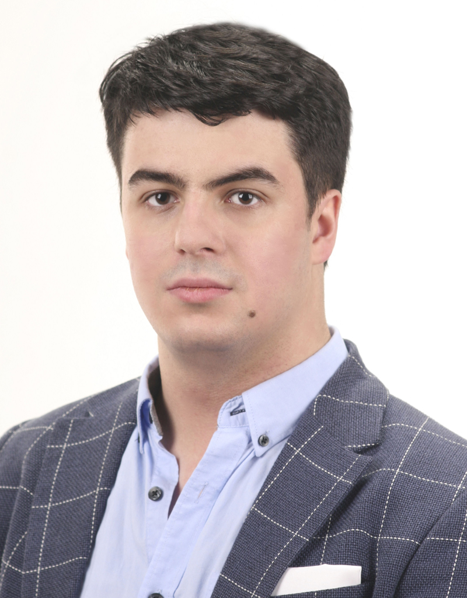

|  |
Artur T. Małas |
I graduated Automation and Robot Control at Lodz University of Technology as a Bachelor of Engineering. I am passionate about programming and modern technologies. It is my goal to constantly deepen my knowledge and expand my skillset. I enjoy working as part of a team but I can also handle challenges on my own.
ContactAccenture Poland | 09.2024-current
Accenture Poland | 03-09.2024
Polish State Railways | 06-08.2022
Bachelor of Engineering in Automation and Robot Control | 2019-2023